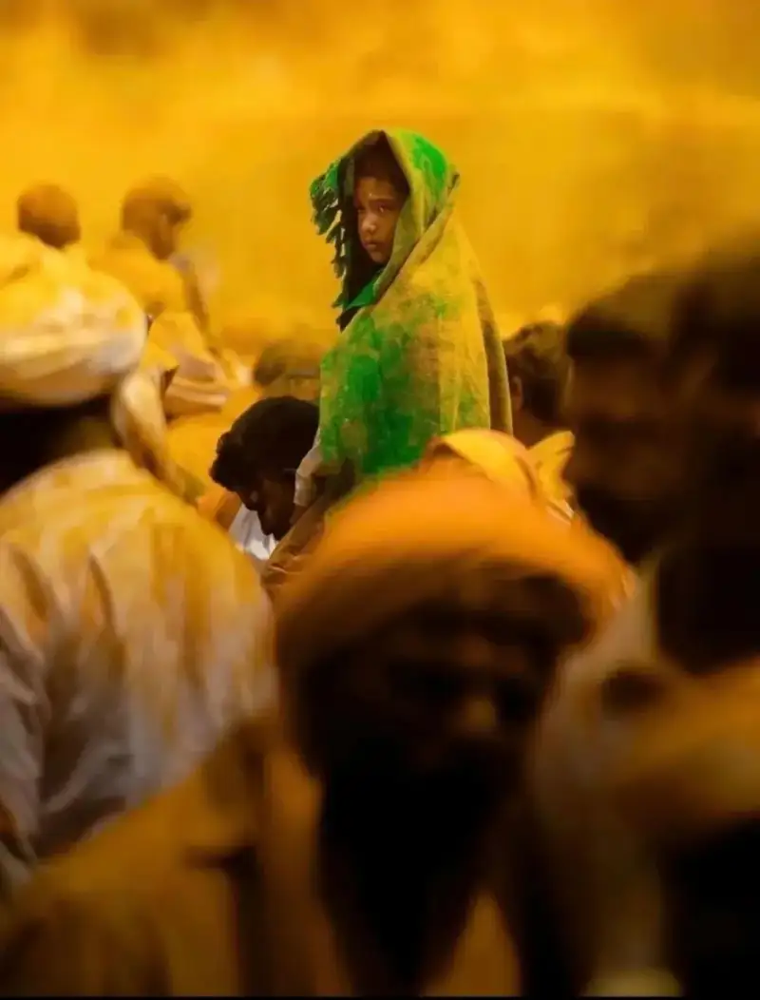
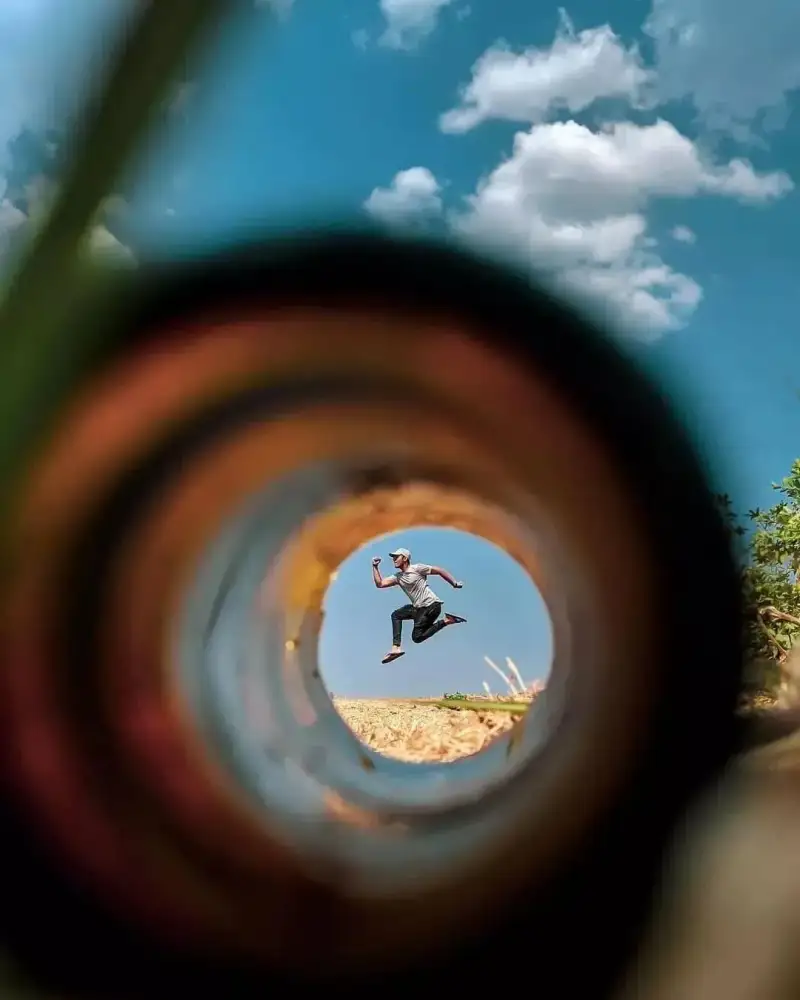
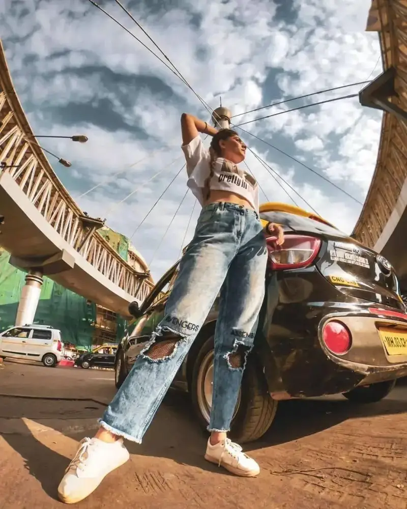
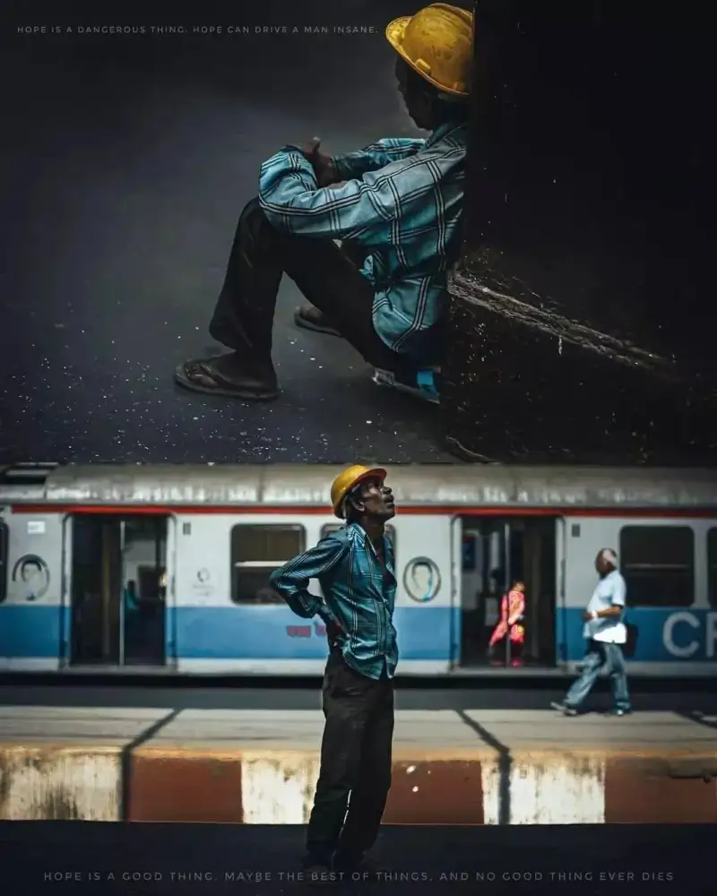
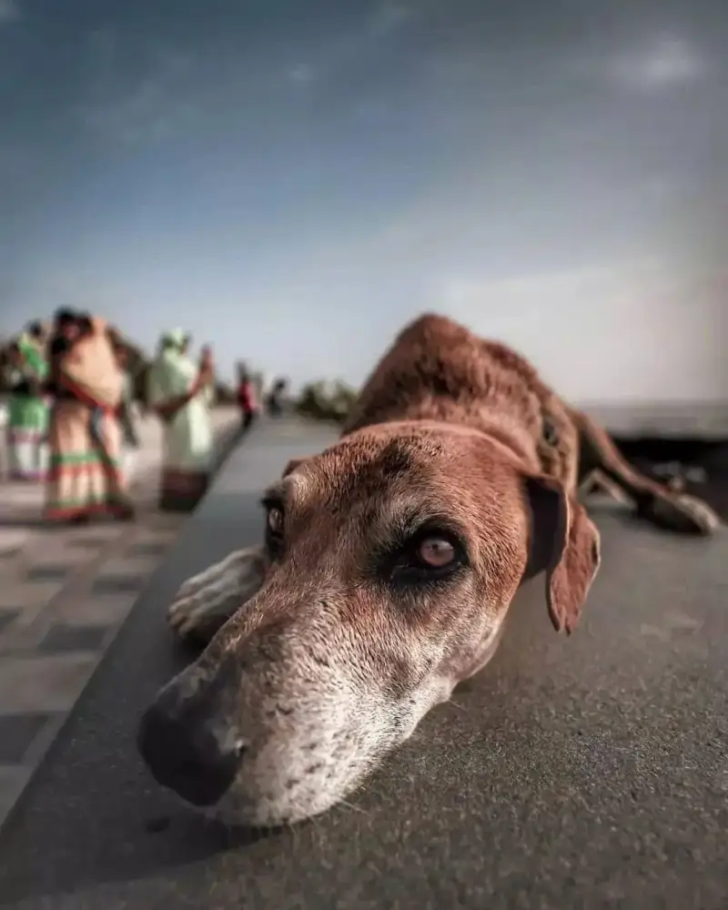
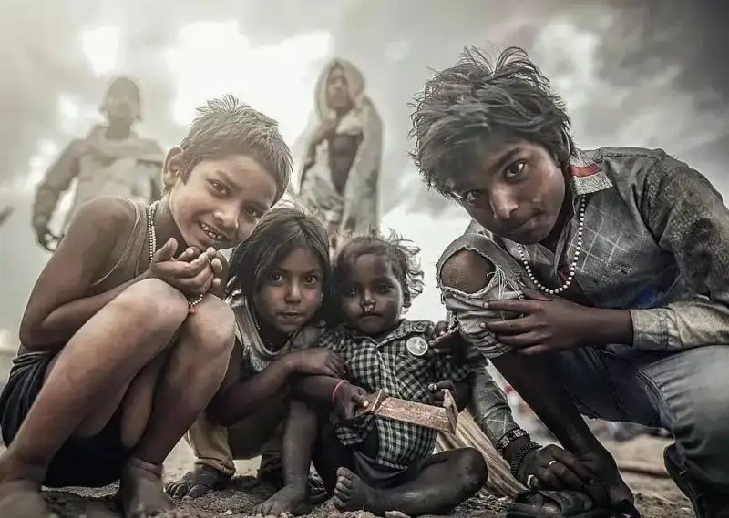

Ganesh Vanare is a skilled photographer from India. He has a sharp eye for light, shadow, color, and composition. His work uses careful framing and post-processing to create images with layers and depth.
He often uses centered composition. This makes the frame feel full and stable. He places people at the center of the image, so their face catches the eye and stands out. He also uses blurred foreground and background. This shows the setting and adds layers to the image.





